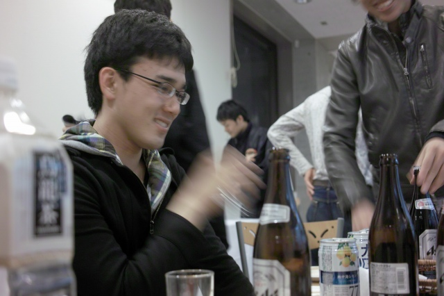
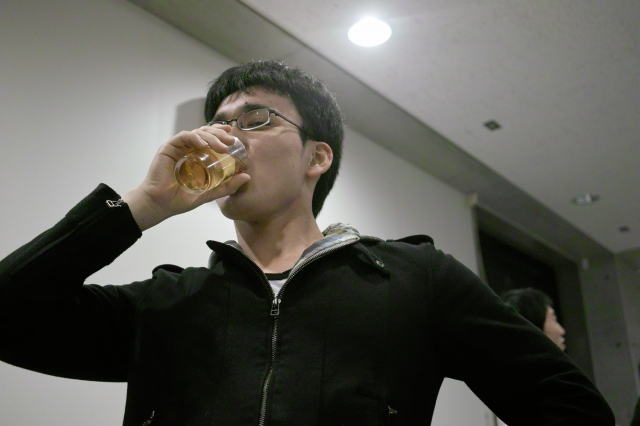

| ・ 新歓コンパ＠ベリタス (H22.04.23) | |||
去年は学部生7名，修士1回生3名で、今年は修士1回生1名，学部生7名が合流しました！ |
|||
|
立食形式です． |
そろそろ開始． | ||
|
S浦くん＠MC． |
乾杯ッ！ | ||
|
YシャツにパーカーなK野くん． |
昨日、就活から帰ってずっと今日まで研究． | ||
|
K野くん、食べてるね． |
| ||
|
村田先生＠巡回中 |
O田くん「Y名田さんの右腕になります！」． | ||
|
N村くん「プログラム課題に苦戦中」． |
Hくん「見ての通りの就活中ッス」． | ||
|
K岡さん「吹奏楽やってます」． |
F島くん「好きなテーマやれって無茶振りです」． | ||
|
H谷くん「卒業する、します！」． |
M永くん「え、4回生でいいじゃないですか！」． | ||
|
Y名田くん「内定を頂きました！」． |
Y名田くん「これで落着いて論文書けます」． | ||
|
M脇くん「趣味は登山！」． |
K野くん「趣味はBBQ！」． | ||
|
H野くん「打倒！基礎リキ！」． |
S浦くん「4回、オレをいじるなよ？」． | ||
|
村田先生「ようこそ！計測研へ！」． |

S浦くん「いじるなよ？」． | ||
|
S浦くん「K(O)梶が居なくなったらM永かよ！」． |
なんだかんだ人気者 | ||
|

それにしてもこのMC,ノリノリである |
いやー内定オメデトウ！！！ | ||
|
|
| ||
|
一本締めをしたので，お開きです |
残念、それは残像だ！ | ||